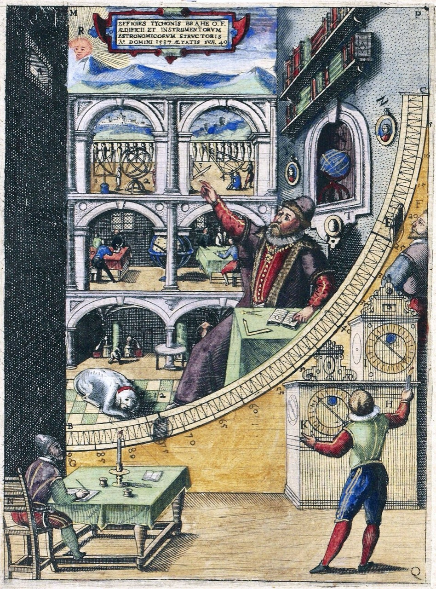
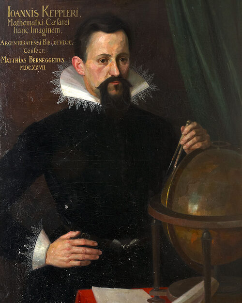
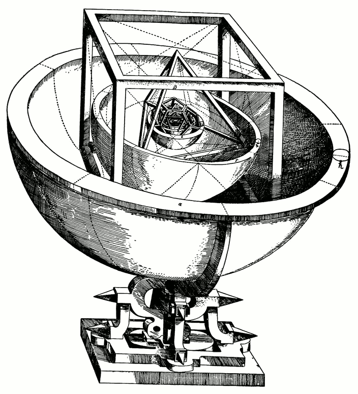
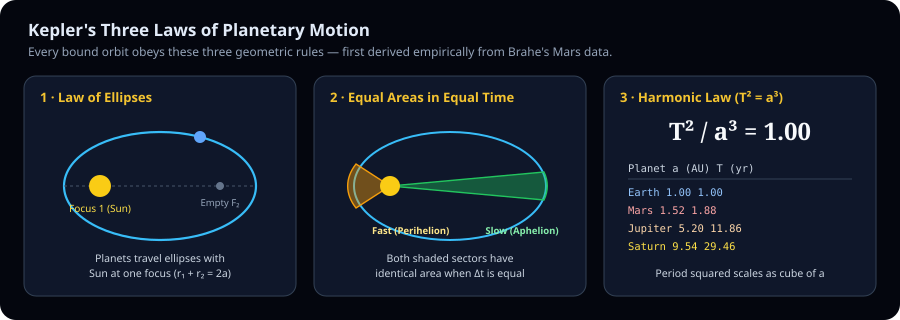

Orbital Mechanics · The Laws of Planetary Motion
Planets Trace Ellipses
Johannes Kepler spent a decade analyzing Tycho Brahe's precise astronomical observations to discover three mathematical laws governing planetary motion — without knowing why they were true. Newton later proved they followed necessarily from his Law of Gravitation.
Kepler found the laws of planetary motion — but he did not know why they were true. Newton showed that Kepler's laws follow necessarily from the law of universal gravitation. This is how physics works: observation uncovers patterns; theory explains them. Kepler's rules are not axioms — they are theorems derived from a deeper law.
Context · 1600–1687
From Data to Law: The 80-Year Journey
Tycho Brahe (1546–1601)
The greatest naked-eye astronomer in history. For 20 years on the island of Hven, Brahe measured planetary positions to an accuracy of 1–2 arcminutes — a factor of 10 better than anyone before him. He never believed in heliocentrism but his data was so precise it would eventually prove him wrong.
Johannes Kepler (1571–1630)
Brahe's assistant and intellectual heir. After Brahe's death, Kepler inherited the data. He spent 8 years trying to fit Mars's orbit to a circle — failing. Then he tried an ellipse. It worked perfectly. He published his first two laws in 1609, the third in 1619.
Isaac Newton (1643–1727)
Newton proved that Kepler's empirical laws are the inevitable mathematical consequences of an inverse-square law of gravitation. This was the first great unification in physics history: terrestrial gravity (falling apples) and celestial mechanics (planetary orbits) were the same force.
Brahe: collect precise data. Kepler: find the mathematical pattern. Newton: explain why. This three-stage process — observation, pattern, explanation — is the template for all of physics.



Kepler's Three Laws
The Mathematical Rules Governing Every Orbit
Ellipse Geometry
An ellipse has two foci. The Sun sits at one focus — not the center. The closest approach is the perihelion; the farthest point is the aphelion. The semi-major axis (a) is half the longest diameter — used in Kepler's Third Law. Eccentricity (e) ranges from 0 (circle) to 1 (parabola).
Polar equation of an ellipse with focus at origin
Kepler's Third Law — Numerical Example
Using Earth as reference (T = 1 year, a = 1 AU):
- Mars: a = 1.52 AU → T = 1.52^(3/2) ≈ 1.88 years ✓
- Jupiter: a = 5.2 AU → T = 5.2^(3/2) ≈ 11.9 years ✓
- Saturn: a = 9.5 AU → T = 9.5^(3/2) ≈ 29.5 years ✓
Newton proved T²/a³ = 4π²/(GM) where M is the star's mass. So knowing the period and semi-major axis of any orbit lets you calculate the central body's mass. We use this to weigh black holes, exoplanet hosts, and the Milky Way's galactic center.

Idea 3 · The Harmonic Law — T² ∝ a³
Period and Distance: The Cosmic Clock
Kepler noticed something remarkable when comparing the orbital data of all known planets: the ratio T²/a³ was the same for every planet. He published this in 1619 — a decade after the first two laws — and it remains one of the most elegant relationships in all of astronomy.
Newton later derived this algebraically from F = GMm/r²: the period comes out exactly as T = 2π√(a³/GM). This was the first prediction of a natural law derived from a more fundamental principle rather than just observed empirically.
Applications Beyond the Solar System
- Weighing the Sun: Earth's orbit gives GM_Sun = 1.33 × 10²⁰ m³/s²
- Exoplanets: measure transit period → determine semi-major axis
- Binary stars: T and separation → combined mass of both stars
- Galaxies: star orbits around galactic center reveal dark matter distribution
- Black holes: S2 star orbits Milky Way center in 16 years at 970 AU → mass = 4 million Suns
Kepler's Third Law + Newton's gravity = the universe's scale. Without this law, we could see the shapes of orbits but never know the masses of the objects at their centers. Every mass measurement in astronomy traces back to this relationship.
Idea 4 · Newton's Proof — Why Kepler Was Right
From Observation to Derivation
Newton's greatest achievement was showing that Kepler's laws aren't independent facts to be memorized — they are inevitable mathematical consequences of one equation:
- Law 1 (Ellipses): For any 1/r² force, the orbit must be a conic section (ellipse, parabola, or hyperbola) — depending on energy.
- Law 2 (Equal Areas): Follows from conservation of angular momentum. Any central force (one always pointing at the same center) produces equal-area sweeping.
- Law 3 (T²∝a³): Follows directly from the 1/r² dependence of gravity: combine centripetal force with the gravitational force law and solve for T.
The Inverse Problem
Newton also solved the inverse: if you observe elliptical orbits, equal-area sweeps, and T²∝a³ — what force law must be responsible? The answer is uniquely 1/r² — inverse square. No other force law produces all three Kepler laws simultaneously.
With an inverse-square force, the orbit shape depends entirely on total energy: Negative total energy → ellipse (bound orbit). Zero energy → parabola (escape at exactly escape velocity). Positive energy → hyperbola (flyby, unbound). This is why comets on hyperbolic paths from interstellar space (like Oumuamua) have never visited us before.